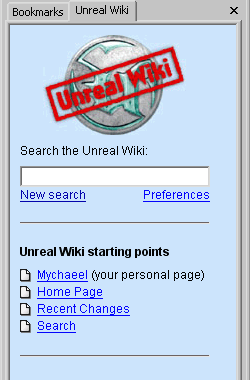

Wiki Integration/Browser Sidebar
The Browser Sidebar adds an Unreal Wiki tab to popular web browser's sidebars. You can search the Wiki and display the search results directly in your browser's sidebar, and it gives you direct access to the most important Unreal Wiki pages.
See Wiki Integration for more ideas of different applications, and Wiki Integration/Browser Search for browser search system plug-ins.
Internet Explorer
![[integration-ie-search-sidebar]](images/integration-ie-search-sideba.gif) |
Automatic Install
Manual Install
UninstallIf you ever want to revert the changes, download http://wiki.beyondunreal.com/misc/integration/unrealwiki-ie-restore.reg and run it. This restores the default Internet Explorer Search Assistant. UsageTo search the Wiki, enter your search topic into the text box and hit enter. Below the text bar, there are some useful quick links. |
Opera
Install
- Right-click on the following link: http://wiki.beyondunreal.com/cgi-bin/wiki-search.cgi
- Select "Add link to bookmarks..."
- Select a bookmark folder you want to save the bookmark in.
- Make sure the "Show in hotlist panel" box is checked.
- Click OK.
Uninstall
Right-click the panel icon and select "Remove panel". Alternatively you can also delete the bookmark or edit it so it no longer shows up in the panel list.
Usage
This panel works and looks exactly like the Internet Explorer sidebar described above.
Mozilla / Netscape
![[MozWikiTab]](images/mozwikitab.gif) |
InstallClick the following [link]. You will be prompted to install the UnrealWiki sidebar. Press yes and the sidebar will appear. UninstallRight click the UnrealWiki tab name and select Customize sidebar.... Select UnrealWiki from the list and press remove. UsageWhen you double-click an item in the tree it will open that page in the current active browser page. You can also right-click the item to see more details about the change. When you click the title or URL in the pop-up window you will go to the page. If you click the Diff menu item you will view recent edits to that page. To search the Wiki, enter your search topic into the field next to the search button and press search. There are some useful quick links in the UnrealWiki menu in the top of the sidebar tab. The sidebar will automatically be refreshed every 15 minutes, but you can do a manual refresh by clicking the Update menu item. |
Kali: This doesn't work properly with the Mozilla 1.8.2 Alpha; the context menu for edits doesn't display the page specific information. The topmost item in the context menu says "Title", ect. I would report this to Mozilla myself, but lacking basic understanding as to how this component works, it might be more fitting for someone else to do so. For instance, El Muerte as he is the creator of the component or Mychaeel, being the ominpotent WikiMaster and Thunderbird hacker.
El Muerte: I noticed that too when I tried Mozilla 1.8.2 Alpha. Since other things of mozilla didn't work properly too I went back to 1.7.2 (1.8 is alpha anyway). Anyway, the context menu is filled via JavaScript, and pretty much all other functionality is done via JavaScript. Haven't done any other research why it doesn't work. But my experience with alpha releases of Mozilla is that often something gets broken over time (nightly builds are even worse).
El Muerte: Ok, I've made some major changes to the mozwiki code. Some new features and major preformance improvements. Also issues with mozilla 1.8 have been fixed. I've moved the configuration to a seperate file (easier for future releases). The new code is available at http://unreal.elmuerte.com/mozwiki.zip .
El Muerte: Bump!?
Tarquin: Maybe mention this in featured pages? Do you need me to install anything on the wiki site? Last time I tried to do something like that I never managed to get the recent changes thing working properly 
El Muerte: yeah, you have to replace the current sidebar PHP code with the PHP files in the above archive. The most important thing to configure is the $conf["datapath"] variable. To point to the location of the data directory. I assume that the way data is stored in the UnrealWiki is still the same as in a stock UseMod wiki. Secondly, you need to change the $conf["sidebar_cmd"] variable so the first part point to the absolute directory of the wiki.pl script. This is used for the special sidebar. Last time this didn't work using method #1, but I think I fixed it now (at least it worked for in my test wiki). If it doesn't work, just change the $conf["sidebar_access"] variable to 2. For the rest everything should be correct. And ofcourse you have to rename the file mozwiki.config.php.dist to mozwiki.config.php This is to make it easier for future updates of the real script code.
El Muerte: hmm, since Wiki Sidebar is now read only, sidebar_access mode 2 doesn't work anymore. So method 1 has to be used (or I have to change the code parsing of mode 2).
Tarquin: I don't know if it works becuase I have 2 sidebars with the same name But I think it's yours that says:
wiki.pl execution failed: Array ( ) XML Parsing Error: no element found Location: http://wiki.beyondunreal.com/misc/integration/mozwiki.php Line Number 19, Column 1: ^
El Muerte: double check the value of $conf["sidebar_cmd"]. It should be something like:
$conf["sidebar_cmd"] = "/full/path/to/the/wiki.pl action=edit\&id=";
When the /full/path/to/the/wiki.pl is the full path as seen by the webserver.
And just thought about this, if the it can't edit the page via http it also can't edit the page via commandline. So I guess I'll have to rewrite the sidebar access. For now, just set $conf["sidebar_access"] = 0. So the rest will just work. I will try to fix it asap.
Tarquin: Ok, will do. But instead of running the Perl script from your PHP, why don't you just take a look inside the data dir, since you have the path for that?
El Muerte: that's the idea, but at first I didn't want to bother figuring out the data file format  (call it being lazy)
(call it being lazy)
Tarquin: Look at the way I did it in wiki.pl (I can't remember if I made the patch available... I did it VERY roughly:
$fileName = &GetPageFile('Wiki_Sidebar');
if (-f $fileName) {
($status, $data) = &ReadFile($fileName);
}
if (!$status) {
# finish error-checking later...
}
$data =~ s[$FS3(text)$FS3(.*?)----(.*?)$FS3(.*)]{
$sidebarText = $3;
}es;
El Muerte: ok, made the changes, should work now. Download the zip again, and overwrite the mozwiki.php script with the one in the archive. set $conf["sidebar_access"] = 3. If the sidebar doesn't show up (e.g. only the default links), just make a minor edit to the Wiki Sidebar so the file change time is updated.
Tarquin: It works 
El Muerte: Tarquin or Michaeel, can you upload an updated version of this sidebar ( http://unreal.elmuerte.com/mozwiki.zip ), I've fixed a few minor bugs and added support for the image rc hack. Simply replace the existing mozwiki.php file with the new one and add the following entries to the mozwiki.config.php file:
$conf["imagehack"] = true; $conf["image_view"] = $conf["basehost"]."/cgi-bin/imageupload.cgi/wiki-ext/imagedisplay.htt?imageid="; $conf["image_rev"] = $conf["basehost"]."/cgi-bin/imageupload.cgi/wiki-ext/imagerevisions.htt?imageid=";
Opera

|
InstallClick here to install the Unreal Wiki sidebar for Opera. UninstallRight-click the Unreal Wiki tab in the sidebar window and select Delete panel. UsageTo search the Wiki, enter your search topic into the text box and hit enter. Below the text bar, there are some useful quick links. |
Other Gecko-based browsers
If you are using a Gecko-based browser besides Mozilla, Netscape or Opera, (un)installing as described above might not work. You should make sure your browser supports sidebars. If it does and the install link still doesn't work, look for an option to add a sidebar manually. The address of the sidebar itself is: http://wiki.beyondunreal.com/misc/integration/mozwiki.php
There's quite a few Gecko-based browsers around - as more users use the sidebars for these browsers, they are welcome to note their experiences on this page. If you try to install the sidebar, and there's no option to add it, check your browser's documentation, or, if you're adventurous, try editing the files storing your browser's configuration.
If your gecko-based browser isn't listed below, and you get the sidebar to work, please add details on how you managed to do it. If you can't, please leave a note, and we will try to help you.
Getting the Opera panel on Mozilla
Add the following text to your profile's panels.rdf file:
<RDF:Description about="urn:sidebar:3rdparty-panel:http://wiki.beyondunreal.com/cgi-bin/wiki-search.cgi" NC:title="Unreal Wiki" NC:content="http://wiki.beyondunreal.com/cgi-bin/wiki-search.cgi" NC:customize="http://wiki.beyondunreal.com/wiki?action=editprefs" NC:persist="false" />
Galeon
Galeon (tested: 1.3.3) supports the (Mozilla) sidebar without a problem. The installation described above does work, but it doesn't ask for a confirmation and installs right away. Deletion is a matter of opening the sidebar and pressing the trashcan button.
Comments
The background is white, not light blue, in these browsers:
- IE6
- Opera
Add your browser to the list if you expierience the same problem in a different browser.
Perhaps this a problem with the HTML file used, not the browsers, after all.
Mychaeel: I checked and it seems that in the process of updating the stylesheets for the new template system they were broken for the browser sidebar. That's not a browser-related problem.
Tarquin: That's a probably feature. BODY is no longer given a background colour, the DIVs are. Either:
- change the HTML to enclose everything in a DIV of the correct class
- change the HTML to BODY class="something" and I will change the CSS accordingly
- on the other hand, wide PRE or USCRIPT text ends up on white background, so I might change it.
Mychaeel: Keep in mind that if you don't define a background color, the default is not white; it's whatever the user configured in his or her browser. For me, it's light gray. So giving the <body> a defined background color definitely is a good idea. Also, the background color is not the only thing that got lost; the fonts did too. – I suggest that you check your features for unwanted side effects like that in future before implementing them.
Tarquin: I still haven't managed to install some of the sidebars, and some of them still don't seem to work – in particular one of the Mozilla ones where I was asked to make some settings in the perl script. If people tell me what classes the sidebar uses which are broken, I'll look into it. But the sidebar writers could update the HTML to match the new classes.
Mychaeel: The one and only Wiki Browser Sidebar we're talking about here is http://wiki.beyondunreal.com/cgi-bin/wiki-search.cgi, and I'm the author. I consider this part of the Unreal Wiki website, and as a visitor I'd expect that it wasn't broken by anything that was changed in other parts of the site. – The sidebar's HTML templates are wiki-ext/search.something.htt.
Tarquin: Ok. I'll have it fixed, probably tonight.
Tarquin: *slowly gets it* it's the same sidebar for IE6 and Opera, just a different link to install it? And it can be run on Moz too? In that case, I will completely reorganize the above. We have TWO sidebars, one multi-browser, one Moz-only.
Mychaeel: Yes, that's right. It's only one sidebar.
Mychaeel: The background color is light-blue, but the logo is on a sidebar-blue background; that looks weird. Please make the sidebar background dark-blue as well. Also, some of the fonts aren't correct yet. – For that matter, I just realized that the Wiki Sidebar uses no fixed font or font size; rather it inherits the user's browser preferences. Given that everything else is fixed that's not a good idea. While you're at it, I suggest you use Arial instead of Times there.
tarquin: in that case, two options:
- I use a body class="sidebar" and add selectors in the main stylesheet
- I make a sidebar-only stylesheet.
which do you think is best?
Mychaeel: Making a CSS class selector, I guess.
Mychaeel: I'm afraid that the sidebar layout still doesn't look as it should (fonts don't match, background color too light). tarquin: Do you need more information, or should I tackle this? (Though I don't know what exactly you changed in the styles when implementing the new template system earlier.)
Tarquin: It's on my list. I'll do it soon, maybe this afternoon. (you concentrate on JB!  ) ... done!
) ... done!
Mychaeel: Hmm – something changed, but somehow not to the better... now my personal links are spread apart and the headers are still in 12pt Times while they should be in 9pt Arial.
Tarquin: I think I will give the sidebar its own stylesheet to avoid conflicts like this.
Mychaeel: Actually, the idea behind using the same style sheet was that changes in those styles would automatically reflect in the side bar. I didn't expect that fundamental settings like font faces and sizes would be taken out of the <body> tag. – It's a bit better now (the font faces are right), but now the text in the tables has 12pt instead of 9pt. And the background is still light-blue instead of dark-blue.
Tarquin: if you want it integrated again, I could maybe use the same class as the sidebar, dark blue background with thin white dividers (instead of HR).
Mychaeel: We're getting closer – fonts are fine, just too large (still inherit the usually 12pt from the browser's own configuration).
Tarquin: AAAAAAAAAAAAAAAAAAAAAAAAAAAAAAAAAAAAAAAAAAAAAAAAAAAAAAAAAAARG. It's because text inside a TABLE doesn't inherit from the parent BODY or DIV. Stupid css. Must be a bug, surely?
Mychaeel: Don't know – just that all CSS-compliant browsers I tried do it alike. By the way: While the bookmarks themselves look good now, the "Bookmarks" title is still too large. – That iteration cycle strikes me as pretty inefficient, actually. How about you just try looking at the sidebar page yourself after each attempt of fixing it?
Tarquin: I don't use it, so I'm not exactly sure what you (the designer ) wants from it. Plus I can't view it locally; it's only with a quick hack that I'm able to view the results on the header, but without the generated content. I need to save a static dummy version to play with. If I have time, I might remodel it to use DIVs and floats instead of tables, subject to your approval. I'll certainly switch those headings to headings tags.
Mychaeel: It should be clear from the screenshots on this page how it's supposed to look, I think.
Tarquin: Working on it. May I suggest this instead of a table:
h1 { font-family:Arial, Helvetica, sans-serif; font-size:9pt; border:solid black 1px; /* just for testing */ } h1 a { float: right; padding-left: 4px; } <h1><a href="wiki-search.cgi?reset=all" title="Mark all pages as read"><img src="http://wiki.beyondunreal.com/wiki-ext/button-markasread.gif" alt="[Mark as Read]" width=63 height=14 border=0></a> <a href="javascript:pageAdd(getCookie('page'))" title="Add current page to bookmarks"><img src="http://wiki.beyondunreal.com/wiki-ext/button-addpage.gif" alt="[Add Page]" width=47 height=14 border=0></a> Bookmarks </h1>
Mychaeel: Not using a table won't work for the bookmarks themselves though if a bookmark title spans several lines. – Nobody ever said it was necessary to abolish all tables by all means. Sometimes a table simply is a table.
Tarquin: Agreed. That's just for the "bookmarks" heading. I don't think I'll bother changing HR to DIV because I can't test the script locally for some reason so it would take too long.
Making our own Sidebar ?
PaDNick: Is there a chance to get explanations or sourcefile for http://wiki.beyondunreal.com/misc/integration/mozwiki.php so we can make our own sidebars (for foreign UseMod engines) ?
El Muerte: you can get it here: http://unreal.elmuerte.com/mozwiki.zip
PaDNick: wow! Thanks a lot for that quick (and really nice) answer
mutante: nice,i also wanted to use this for our own UseMod wiki,Now i am currently trying to make an .xpi file out of this, which will work in mozilla firefox, any hints? then it would show nicely in the "extensions" menu.
grouping
Tarquin: It seems to me that this page could be more logically grouped as Mych's sidebar (for Opera / IE / Moz) and ElMuerte's Mozilla sidebar. What does everybody think? Please vote in the poll:
- [0] – Current grouping by browser
- [1] – proposed goruping by author